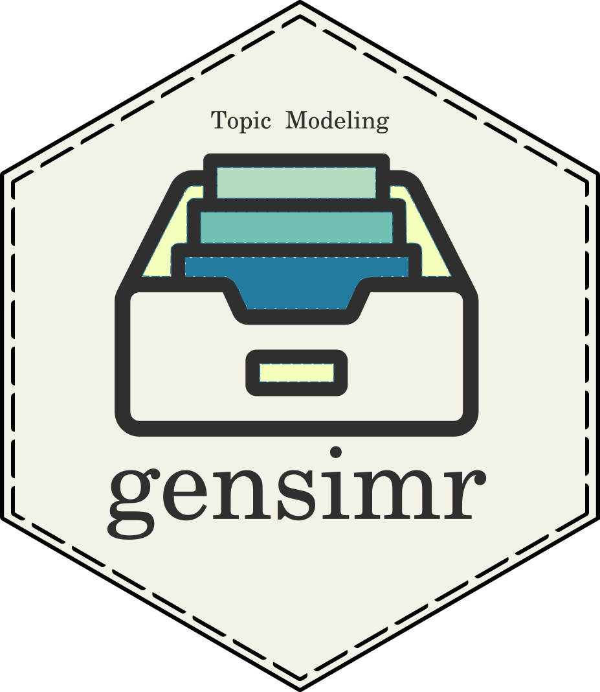
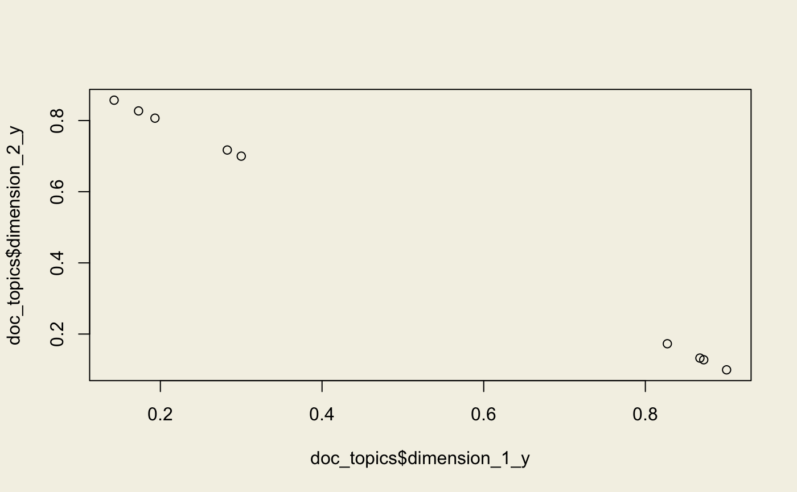

Topic Modeling for Humans with gensim.
Large scale efficient topic modeling in R and Python.
Example
Below we build a very basic Latent Dirichlet Allocation model aiming for 2 latent dimensions using example data.
library(gensimr)
# example corpus
data("corpus", package = "gensimr")
# preprocess documents
texts <- prepare_documents(corpus)
#> → Preprocessing 9 documents
#> ← 9 documents after perprocessing
dictionary <- corpora_dictionary(texts)
corpus <- doc2bow(dictionary, texts)
# latent similarity index
lda <- model_lda(corpus, id2word = dictionary, num_topics = 2L)
topics <- lda$print_topics() # get topicsObjects returned by the package are not automatically converted to R data structures, use reticulate::py_to_r as shown below to convert them.
reticulate::py_to_r(topics) # convert to R format
#> [[1]]
#> [[1]][[1]]
#> [1] 0
#>
#> [[1]][[2]]
#> [1] "0.121*\"interface\" + 0.094*\"computer\" + 0.091*\"human\" + 0.090*\"graph\" + 0.088*\"trees\" + 0.087*\"user\" + 0.081*\"minors\" + 0.079*\"system\" + 0.074*\"survey\" + 0.072*\"eps\""
#>
#>
#> [[2]]
#> [[2]][[1]]
#> [1] 1
#>
#> [[2]][[2]]
#> [1] "0.145*\"system\" + 0.103*\"user\" + 0.102*\"trees\" + 0.101*\"graph\" + 0.081*\"time\" + 0.078*\"response\" + 0.074*\"eps\" + 0.073*\"survey\" + 0.069*\"minors\" + 0.064*\"human\""We can then use our model to transform our corpus and then the document topic matrix.
corpus_wrapped <- wrap(lda, corpus)
doc_topics <- get_docs_topics(corpus_wrapped)
plot(doc_topics$dimension_1_y, doc_topics$dimension_2_y)
The plot correctly identifies two topics/clusters. As stated in table 2 from this paper, the example corpus (data(corpus)) essentially has two classes of documents. First five are about human-computer interaction and the other four are about graphs.